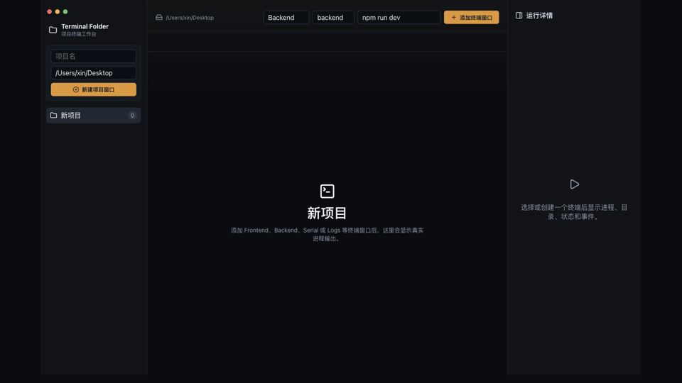

Project-first terminal management
Group terminals by repo so frontend, backend, workers, logs, and tunnels stay in the right context.
For local development stacks
Keep frontend servers, APIs, workers, tunnels, logs, scripts, and project probes organized across many local repos.
Real PTYs. Saved launch commands. Manual Project Inspector. Lightweight inactive terminals.

Group terminals by repo so frontend, backend, workers, logs, and tunnels stay in the right context.
Save multiline launch commands per terminal and copy them without leaking commands across projects.
Scan scripts, env files, workflows, docs, and service markers from the configured Project path.
Stopped terminals stay lightweight. xterm and PTY sessions start only after explicit user action.
| Tool | Best at | Terminal Workspace focuses on |
|---|---|---|
| Terminal / iTerm2 | Lightweight shell windows | Cross-project organization and command memory |
| Warp | Polished terminal experience | Managing many local project terminals together |
| tmux | Terminal-native multiplexing | Desktop UX, project metadata, and local-dev workflows |
Download the latest dmg or zip from GitHub Releases. Builds are currently ad-hoc signed and not notarized.